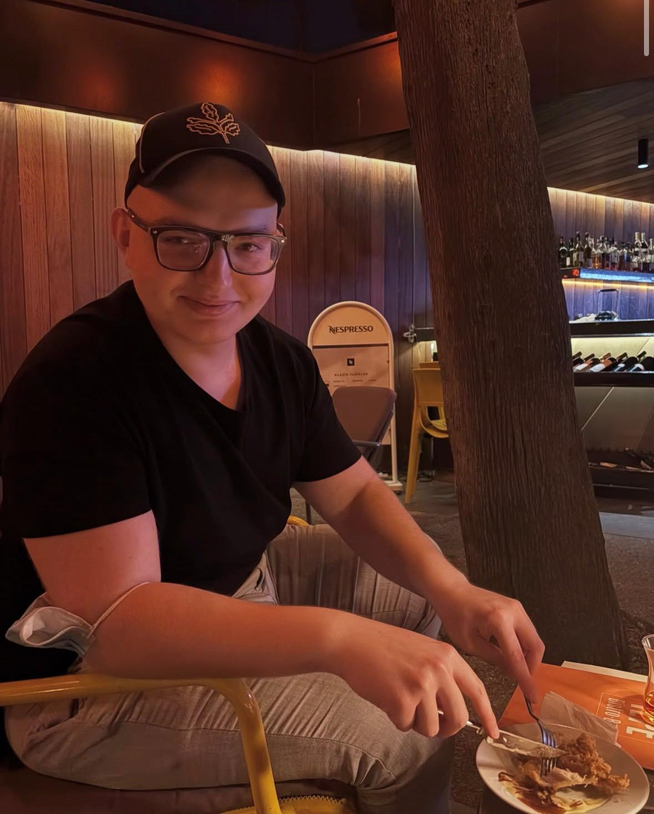

06.07.2026
nato zirvesi için geldiler

Allston’lu liderler Onat Ergin ve Yusuf Tasyurt, Ankara’da gerceklesecek olan NATO zirvesi oncesinde Istanbul’da goruntulendi. Yogun toplanti temposu oncesinde bir kac gun Istanbul’da konaklamayi tercih eden iki lider, hasret gidermek icin liserinin mezunlar dernegini tercih etti. Carsamba gunu aksam saatlerinde Robert Kolej Mezunlar Derneginde bulusan ikili alkol almadi.
MAYIS AYINDAN BERI ILK DEFA GORUNTULENDILER
Mayis ayinin ilk haftasi apppar topppar Turkiye’ye donen Onat Ergin, ilk defa basinin onune bu carsamba aksami, eski dostu ve calisma arkadasi Yusuf Tasyurt’la birlikte cikti. Ortada hicbirsey yokken, finalleri verdikten sonra ortadan kayyybolan Onat Ergin hakkinda “Yok efendim, ailesiyle problemleri var”, “Hayir efendim, bitcoinden batti”, “Yok canim olur mu oyle sey, Uskudar American Academy’de okuyan kardesi sevgilisinden ayrilmis da, ona teselliye gitmismis.” vb. haberleri yalanlayan Onat Ergin, ortadan yok olusunun sebebini ilk defa Allston Son Dakika ekibine acikladi.
“PARMESAN VE MOZERELLA BANA GORE DEGIL”
Ortadan kaybolusunu aciklayan Onat Ergin, hakkinda cikan dedikodularin aksine, appar toppar Turkiye’ye gelisinin sebebi olarak basit bir problemi isaret etti. “Parmesan ve Mozerella bana gore degil.” diyen Ergin, gece yarisi yarim ekmek arasina sucuk, beyaz peynir, kasar ve erzincan tulumu ile yaptigi tost ekmegini ozledigini, bu sebeple anavatani Turkiye Cumhuriyetine intikal ettigini gazetecilerimize soyledi.
“YUSUF’LA START-UP YAPARSAK, ALAYINA KOYARIZ”
Y-Combinator’in 2026 yaz donemi yatirimlarinin aciklanmasi uzerine basina yansiyan, yok efendim iki Turk gencine 1 milyar dolar yatirdik, hayir efendim bir turk bir amerikan tarafindan 2026 yilinda kurulan bir startup unlu VC Y-Combinator tarafindan yatirilip yaglandi. Yok canim bir gun bir fransiz, bir ingiliz, bir de temel Y-Combinator’a binmisler vb. gibi haberlere yanit veren Onat Ergin, “Biz Yusuf’la start-up yaparsak, alayina koyariz” diyerek dominasyon gosterdi.
200 LIRA PARK YERI MI OLUR AMINA KOYAYIM
Yarin sabah saat 8’de Y-Combinator’la final final stage interview’im var diyerek mekandan saat 11 civari ayrilan Onat Ergin, Bizimtepe otopark gorevlisiyle sozlu munakasaya girdi. Otopark ucreti olarak 200 lira isteyen gorevliye, “200 Lira park yeri mi olur amina koyayim” diyen Onat Ergin, gorevlinin sozlu israri sonucunda parayi “Al sanki manhattan midtowndayiz amk“ diyerek verdi. Daha sonasinda gazetecilere donup ”Sidiki sheriff bu kadar pahaliya patlamadi, biz otoparka domaldik, aziz baskan bizi kurtar“ diyerek mekandan ayrildi.